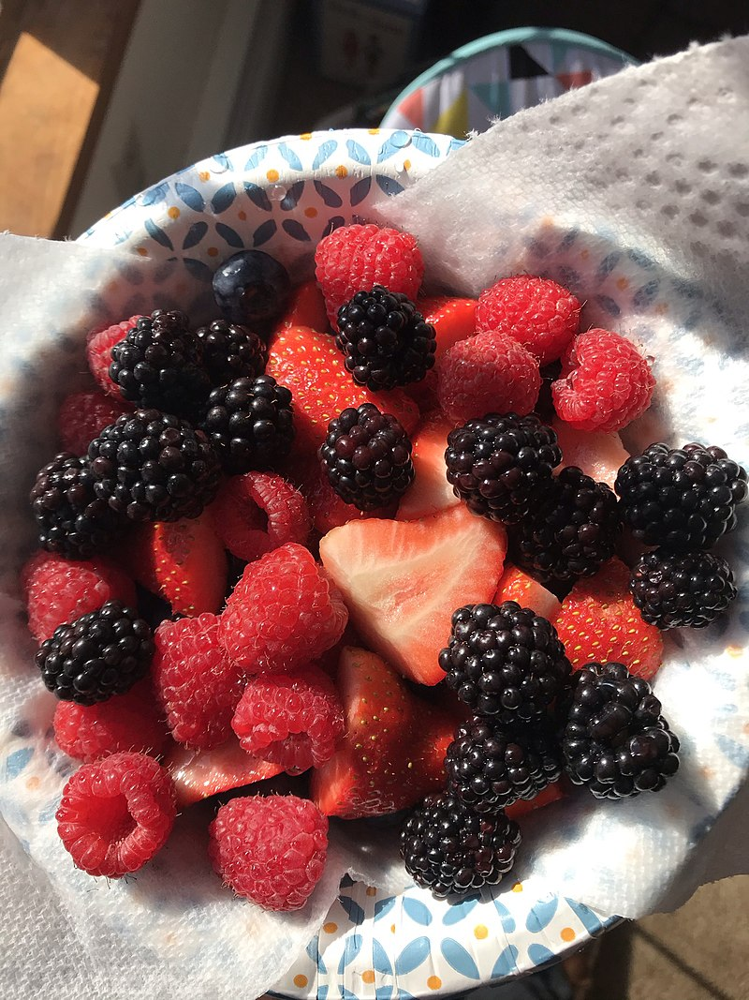

Fruits are the means by which flowering plants (also known as angiosperms) disseminate their seeds. Edible fruits in particular have long propagated using the movements of humans and animals in a symbiotic relationship that is the means for seed dispersal for the one group and nutrition for the other; in fact, humans and many animals have become dependent on fruits as a source of food.Consequently, fruits account for a substantial fraction of the world's agricultural output, and some (such as the apple and the pomegranate) have acquired extensive cultural and symbolic meanings.

A berry is a small, pulpy, and often edible fruit. Typically, berries are juicy, rounded, brightly colored, sweet, sour or tart, and do not have a stone or pit, although many pips or seeds may be present.
Berries are eaten worldwide and often used in jams, preserves, cakes, or pies. Some berries are commercially important. The berry industry varies from country to country as do types of berries cultivated or growing in the wild. Some berries such as raspberries and strawberries have been bred for hundreds of years and are distinct from their wild counterparts, while other berries, such as lingonberries and cloudberries, grow almost exclusively in the wild.